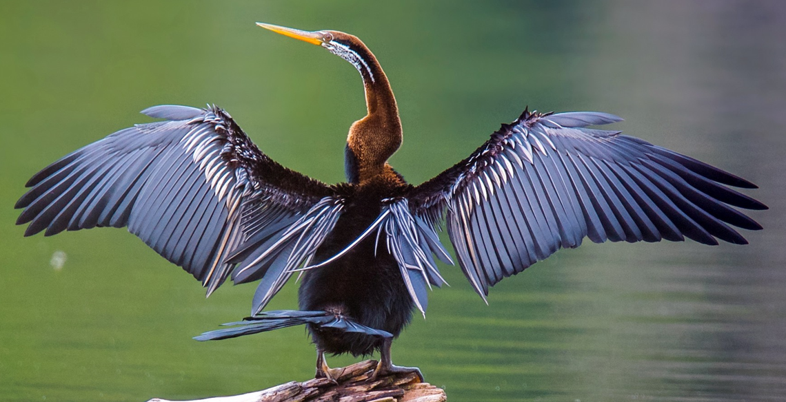

Bhitarkanika National Park
Location : Northeast Kendrapara district in Odisha in eastern India
Established in : 1998
Area : 145 km2
Flora : Mangrove forests.
Fauna : Saltwater crocodile, Indian python, black ibis, wild boar, rhesus monkey, chital, darter, cobra,
monitor lizard, olive ridley turtles. Birds such as Asian open bill, cormorants, darters, black ibis, egrets, are frequently
seen in the park. Avifauna includes 320 species including eight kingfisher species.
Features : The second largest mangrove ecosystem in India.

Bhitarkanika National Park

Darter

Olive ridley turtle
Simlipal National Park
Location : Mayurbhanj district in Odisha
Established in : 1980
Area : 2750 km2
Flora : The park is a treasure house of 1076 species of plants belonging to 102 families. 96 species of
orchids have been identified here. It lies in the Eastern Highlands moist deciduous forests ecoregion, with tropical moist
broadleaf forest and tropical moist deciduous forests with dry deciduous hill forest and high level Sal forests. There exist
medicinal and aromatic plants also. Red silk cotton trees grow in abundance.
Fauna : A total of 42 species of mammals, 242 species of birds and 30 species of reptiles have been recorded.
Tiger, leopard, Asian elephant, sambar, barking deer, gaur, jungle cat, wild boar, chausingha (four horned antelope), giant
squirrel and common langur. 231 species of birds nest in these forests. Red junglefowl, hill mynah, peafowl, Alexandrine
parakeet, crested serpent eagle are the commonly found birds. The grey hornbill, Indian pied hornbill, Malabar pied hornbill
and Indian trogon are also found in the reserve.
Features : It was formally designated a tiger reserve in 1956 and under Project Tiger in May 1973.

Simlipal National Park

Malabar trogon

Four-horned antelope